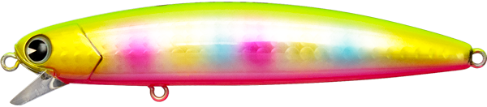
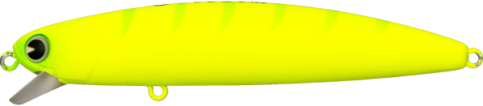
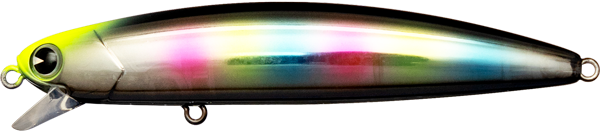
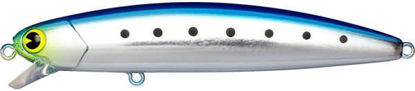

ソバット100
ソバット（sobat）100はアムズデザイン(ima)が2026年に発売した新作ルアーです。
ソバットにサイズアップ版がついに登場しました！名作シンペンがさらに釣れるようになった秘訣を徹底解説。

- メーカー
- ima(アイマ/アムズデザイン)
- 長さ
- 100mm
- 重さ
- 17.5g
- レンジ
- 20～50cm
- タイプ
- シンキング
- アクション
- 可変アクション
- ターゲット魚種
- シーバス
- 発売日
- 2026年3月10日
ソバット100の特徴
名作ルアーのサイズアップはいいこと尽くし！imaの自信作だ！-
MRD搭載で遠投性能がパワーアップ
imaの重心移動システム”MRD”を搭載することで、飛距離がアップ！ウェイトはすぐm¥に戻る設計のため、固定重心と同じ使用感を維持します。
-
リトリーブスピードで変化するアクション
リップが程よく水を噛むため、使用感が良い。リトリーブの速さにより、ミノーライクやシンペンライクにアクションを変えることができます。
-
オーブンエリアのサーチにも使用できるサイズ感
サイズアップにより、オープンエリアのサーチから沖の明暗部のピンポイント攻略にまで対応します。
ソバット100の使い方・得意な状況
使用場所は小場所～大場所まで得意の遠投性能で対応可能です。
使い方は基本的にただ巻きで、手元に振動が伝わるか伝わらないかぐらいがベストです。
いろんなベイトがいてルアーサイズに迷うときに最適！
ワンポイント
ソバットは不意な大物も釣れるルアー。そんなでサイズアップでフックサイズが上がったのも大きなメリットです。安心して大物とファイトできます。 ドリフトで流してもよし巻いて水を当ててもよし。
人気カラー

玉彩弐
imaを代表するニューカラー。アピール力抜群。

マットチャートギーゴ
ナイトゲームでハイアピールするカラー。このカラーしか釣れない時がある。

サイトジョーカー
人気のレインボーとナイトゲームでの視認性を両立したカラー。

ウミベイト
イワシに似せたカラーはシーバスの大好物。フラッシングでアピール。
画像出典:ima公式HP
sobat80に似ているルアー
- 弾丸ソバット80
- ソバット80